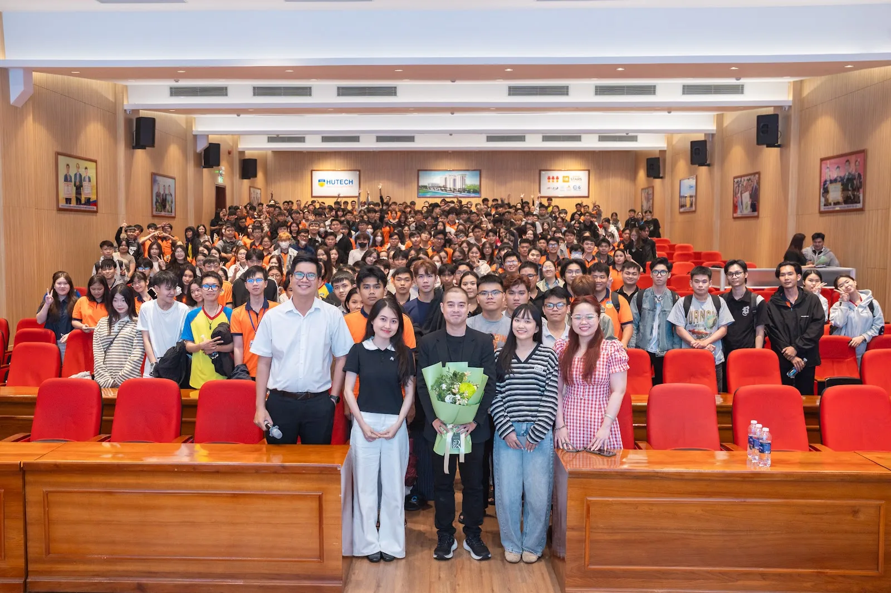
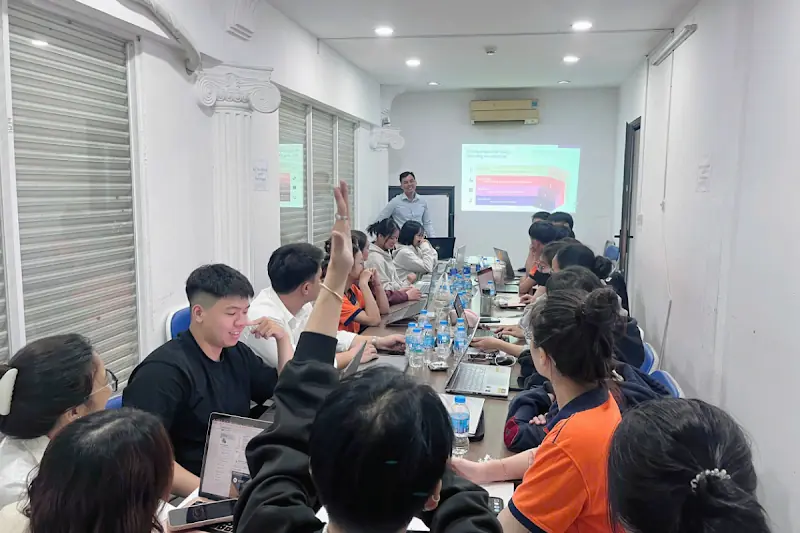
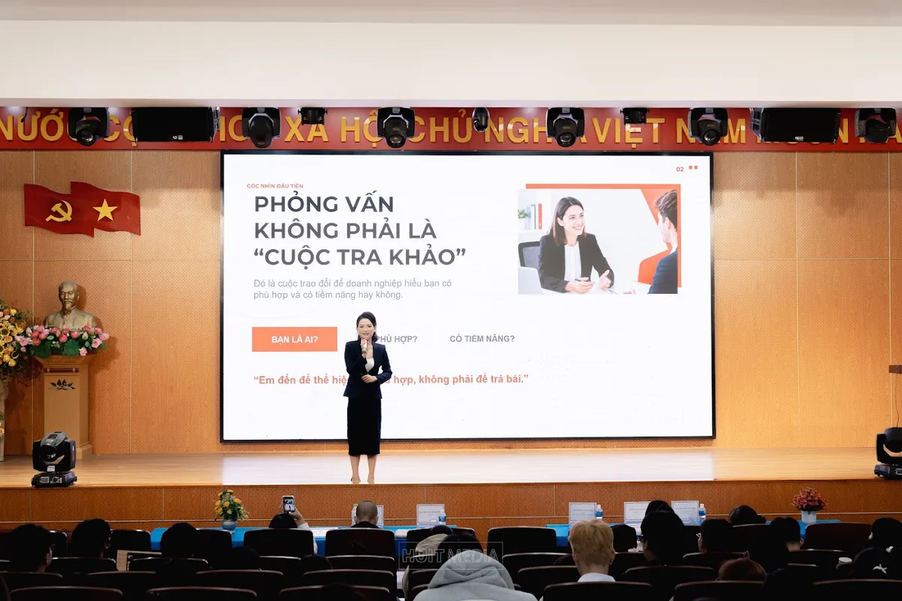
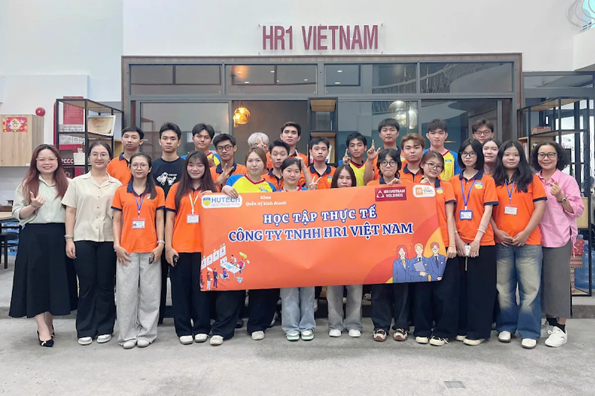
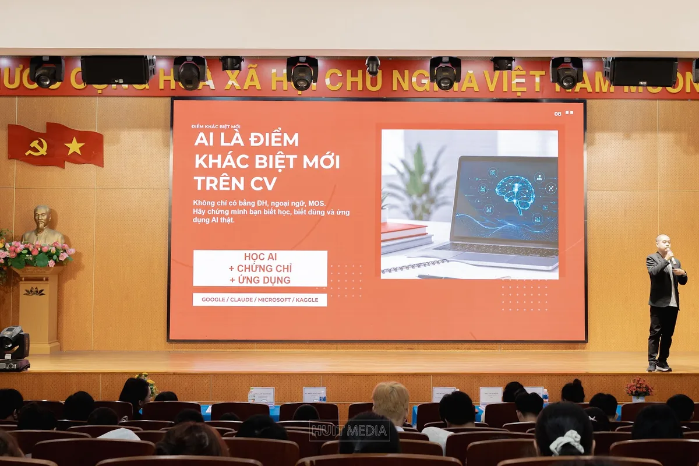
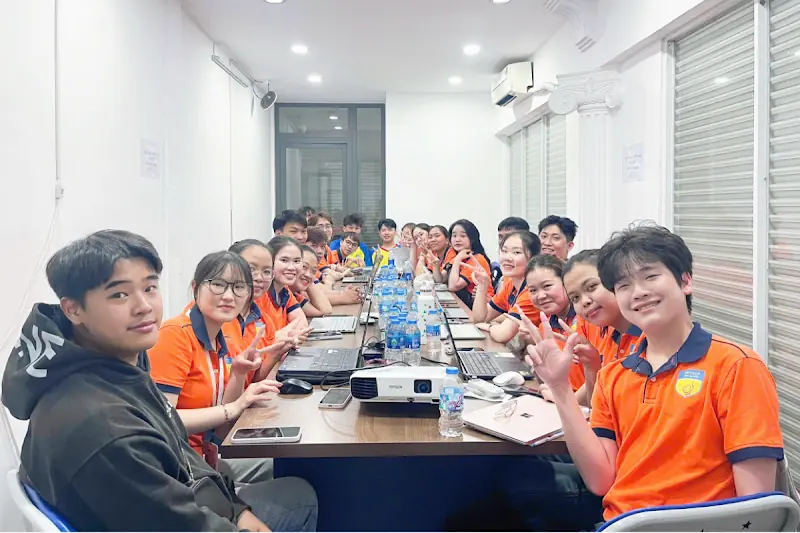
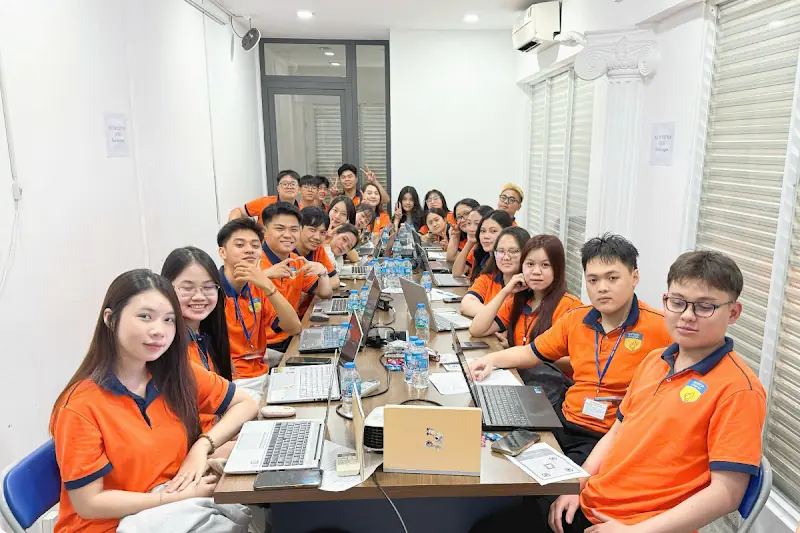
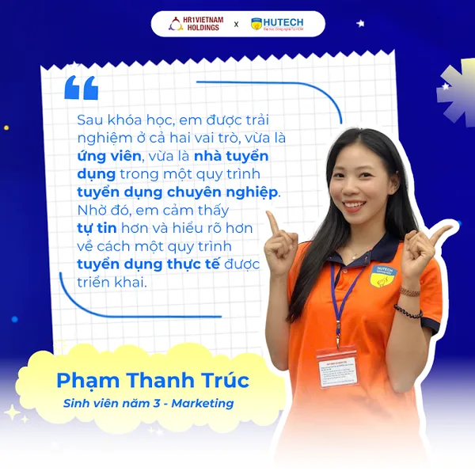
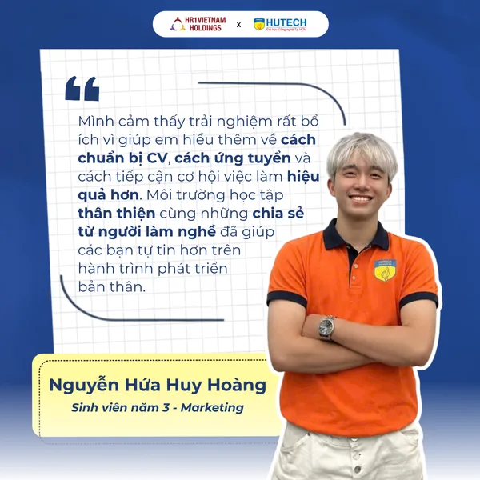

01
Thiếu trải nghiệm thực tế
Sinh viên chưa có nhiều cơ hội quan sát môi trường doanh nghiệp, quy trình tuyển dụng và cách kiến thức được áp dụng vào công việc.
Sẵn sàng nghề nghiệp trong thời đại AI
HR1Vietnam đồng hành cùng nhà trường thông qua workshop, webinar, Company Tour và các chương trình đào tạo thực chiến, giúp sinh viên chủ động chuẩn bị cho hành trình thực tập, ứng tuyển và bắt đầu công việc đầu tiên.

Company Tour & Đào tạo Tuyển dụng Thực tế
Click-to-play · Video lazy-loadSinh viên ngày nay có nhiều cơ hội tiếp cận kiến thức và công nghệ, nhưng vẫn cần thêm trải nghiệm thực tế, định hướng nghề nghiệp và kỹ năng ứng tuyển để tự tin bước vào thị trường lao động.
Sinh viên chưa có nhiều cơ hội quan sát môi trường doanh nghiệp, quy trình tuyển dụng và cách kiến thức được áp dụng vào công việc.
Các dự án học tập, hoạt động ngoại khóa và trải nghiệm cá nhân chưa được chuyển hóa thành bằng chứng rõ ràng trên CV hoặc trong phỏng vấn.
Sinh viên có thể còn thiếu sự tự tin, kỹ năng giao tiếp và phong thái chuyên nghiệp khi tiếp xúc với nhà tuyển dụng.
Biết sử dụng công cụ AI chưa đồng nghĩa với khả năng ứng dụng hiệu quả, trung thực và có trách nhiệm trong học tập, ứng tuyển và công việc.
Khoảng cách cần được thu hẹp
Sinh viên ngày nay có nhiều cơ hội tiếp cận kiến thức và công nghệ, nhưng vẫn cần thêm trải nghiệm thực tế, định hướng nghề nghiệp và kỹ năng ứng tuyển để tự tin bước vào thị trường lao động.
Sinh viên chưa có nhiều cơ hội quan sát môi trường doanh nghiệp, quy trình tuyển dụng và cách kiến thức được áp dụng vào công việc.
Các dự án học tập, hoạt động ngoại khóa và trải nghiệm cá nhân chưa được chuyển hóa thành bằng chứng rõ ràng trên CV hoặc trong phỏng vấn.
Sinh viên có thể còn thiếu sự tự tin, kỹ năng giao tiếp và phong thái chuyên nghiệp khi tiếp xúc với nhà tuyển dụng.
Việc biết sử dụng công cụ AI chưa đồng nghĩa với khả năng ứng dụng AI hiệu quả, trung thực và có trách nhiệm trong học tập, ứng tuyển và công việc.
Khoảng cách này có thể được thu hẹp thông qua trải nghiệm thực tế, sự hướng dẫn đúng lúc và những chương trình được thiết kế sát với nhu cầu của thị trường lao động.
Khám phá giải pháp đào tạo của HR1Vietnam
HR1Vietnam hiểu cả điều doanh nghiệp đang tìm kiếm và những khó khăn sinh viên thường gặp khi chuẩn bị thực tập, ứng tuyển và bắt đầu công việc đầu tiên.
Chương trình được thiết kế theo bối cảnh người học, kết hợp đào tạo với trải nghiệm thực hành và có thể triển khai linh hoạt theo nhu cầu của từng trường, khoa hoặc trung tâm đào tạo.
Góc nhìn trực tiếp từ doanh nghiệp, ứng viên và thị trường tuyển dụng.
Kết nối trải nghiệm học tập với môi trường doanh nghiệp thực tế.
Điều chỉnh nội dung theo năm học, chuyên ngành và learning outcomes.
AI được đặt trong bối cảnh ứng dụng trung thực, bảo mật và có trách nhiệm.
Vì sao HR1Vietnam?
Với kinh nghiệm hoạt động trong lĩnh vực tuyển dụng và nhân sự, HR1Vietnam hiểu cả hai phía của thị trường lao động: điều doanh nghiệp đang tìm kiếm và những khó khăn sinh viên thường gặp khi chuẩn bị thực tập, ứng tuyển và bắt đầu công việc đầu tiên.
Từ nền tảng đó, HR1Vietnam phối hợp cùng nhà trường xây dựng các chương trình đào tạo có tính thực tiễn, dễ ứng dụng và phù hợp với từng nhóm sinh viên.
HR1Vietnam mang vào chương trình những góc nhìn được hình thành từ quá trình làm việc trực tiếp với doanh nghiệp, ứng viên và các vị trí tuyển dụng trên thị trường.
Nội dung đào tạo không chỉ dừng ở lý thuyết mà tập trung vào:
Mỗi chương trình được xây dựng dựa trên bối cảnh thực tế của người học:
Nhờ đó, cùng một chủ đề có thể được điều chỉnh về độ sâu, phương pháp và hoạt động thực hành cho từng nhóm sinh viên.
HR1Vietnam ưu tiên phương pháp học thông qua trải nghiệm thay vì chỉ truyền đạt nội dung một chiều.
Tùy hình thức chương trình, sinh viên có thể tham gia:
HR1Vietnam có thể phối hợp cùng nhà trường theo nhiều cấp độ:
Nội dung, thời lượng và cách triển khai có thể được điều chỉnh theo quy mô, lịch học và mục tiêu của từng đơn vị.
Đơn vị chủ quản, cung cấp chuyên môn tuyển dụng, nhân sự và năng lực thiết kế chương trình.
Nền tảng hỗ trợ sinh viên tiếp cận thông tin tuyển dụng, cơ hội thực tập và việc làm đa ngành.
Nền tảng nội dung và cơ hội nghề nghiệp dành cho lĩnh vực công nghệ, IT và lực lượng lao động số.
Chương trình được phát triển bởi HR1Vietnam Holdings và được hỗ trợ bởi hệ sinh thái nghề nghiệp HR1Jobs – HR1Tech.
HR1Vietnam không thay thế vai trò đào tạo của nhà trường. Chúng tôi bổ sung góc nhìn doanh nghiệp, trải nghiệm tuyển dụng và những kỹ năng thực tế để giúp sinh viên chuẩn bị tốt hơn cho thị trường lao động.
Khám phá các hình thức hợp tác
Không giới hạn trong một khóa học cố định: chương trình có thể là Company Tour, workshop, webinar hoặc một hành trình đào tạo chuyên sâu được thiết kế riêng.
Trải nghiệm doanh nghiệp kết hợp đào tạo thực chiến, giúp sinh viên quan sát môi trường làm việc và thực hành quy trình tuyển dụng.

Các chuyên đề ngắn hạn tại trường hoặc trực tuyến, giúp sinh viên tiếp cận kiến thức thực tế và kỹ năng cần thiết trước khi thực tập hoặc đi làm.

Chương trình được xây dựng riêng theo đối tượng sinh viên, chuyên ngành, thời lượng và learning outcomes mà nhà trường mong muốn.
Chuẩn bị tâm thế, hồ sơ và kỹ năng cần thiết trước kỳ thực tập hoặc thị trường lao động.
Hiểu quy trình tuyển dụng từ góc nhìn doanh nghiệp và thực hành các nghiệp vụ cơ bản.
Ứng dụng AI hiệu quả, trung thực và có trách nhiệm trong học tập, ứng tuyển và hoạt động nhân sự.
Phát triển các năng lực nền tảng để sinh viên tự tin bước vào môi trường làm việc chuyên nghiệp.

Đào tạo Tuyển dụng Thực tế tại Doanh nghiệp.
Xem Case Study HUTECH →CV · Phong thái · AI · S.T.A.R.
Khám phá Flagship Workshop →Education Partnership Solutions
HR1Vietnam không giới hạn chương trình trong một khóa học cố định. Tùy nhu cầu của từng trường, khoa hoặc trung tâm đào tạo, nội dung có thể được triển khai dưới dạng Company Tour, workshop, webinar hoặc một hành trình đào tạo chuyên sâu được thiết kế riêng.
Trải nghiệm Doanh nghiệp & Đào tạo Thực chiến
Sinh viên trực tiếp tham quan môi trường làm việc, tìm hiểu hoạt động doanh nghiệp và tham gia các nội dung đào tạo có tính thực hành.
Chương trình phù hợp với những đơn vị muốn kết hợp giữa trải nghiệm doanh nghiệp, định hướng nghề nghiệp và phát triển kỹ năng chuyên môn.
Đã triển khai thực tế
HUTECH × HR1Vietnam — Đào tạo Tuyển dụng Thực tế tại Doanh nghiệp
Workshop & Webinar Phát triển Năng lực Nghề nghiệp
Các chuyên đề ngắn hạn được tổ chức tại trường hoặc trực tuyến, giúp sinh viên tiếp cận nhanh với kiến thức thực tế, xu hướng tuyển dụng và các kỹ năng cần thiết trước khi thực tập hoặc đi làm.
Đã triển khai thực tế
Đại học Công Thương × HR1Vietnam — Workshop “Từ Sinh Viên Đến Ứng Viên”
Hành trình Đào tạo Thiết kế Theo Nhu cầu
Chương trình được xây dựng riêng theo đối tượng sinh viên, chuyên ngành, thời lượng và learning outcomes mà nhà trường mong muốn.
Đây là hình thức phù hợp với các đơn vị cần một chương trình dài hạn hoặc muốn kết hợp nhiều hoạt động trong cùng một hành trình học tập.
Kick-off và định hướng
→ Workshop chuẩn bị
→ Company Tour
→ Đào tạo chuyên môn
→ Thực hành và phản hồi
→ Tổng kết và đánh giá
Thiết kế theo nhu cầu đối tác
Các nhóm chủ đề dưới đây không phải bốn khóa học cố định. Đây là các content tracks có thể được đưa vào Company Tour, workshop, webinar hoặc chương trình tùy chỉnh.
Sẵn sàng Nghề nghiệp & Ứng tuyển
Giúp sinh viên chuẩn bị tâm thế, hồ sơ và kỹ năng cần thiết trước khi bước vào kỳ thực tập hoặc thị trường lao động.
Từ Sinh Viên Đến Ứng Viên
Tuyển dụng & Nhân sự Thực chiến
Giúp sinh viên hiểu quy trình tuyển dụng từ góc nhìn doanh nghiệp và thực hành các nghiệp vụ cơ bản trong lĩnh vực tuyển dụng.
Đào tạo Tuyển dụng Thực tế tại Doanh nghiệp
AI trong Nhân sự & Phát triển Nghề nghiệp
Giúp sinh viên hiểu cách ứng dụng AI trong quá trình chuẩn bị nghề nghiệp và tiếp cận hoạt động nhân sự một cách hiệu quả, trung thực và có trách nhiệm.
Chủ đề mở rộng có thể triển khai theo nhu cầu
Kỹ năng Mềm & Tác phong Công sở
Giúp sinh viên phát triển các năng lực nền tảng để tự tin hơn khi bước vào môi trường làm việc chuyên nghiệp.
Chủ đề có thể thiết kế theo nhóm sinh viên
Đào tạo Tuyển dụng Thực tế tại Doanh nghiệp
Company Tour kết hợp đào tạo, giúp sinh viên trải nghiệm môi trường doanh nghiệp và thực hành quy trình tuyển dụng từ đăng tin, sourcing, screening CV đến phỏng vấn.
Xem Case Study HUTECH
Từ Sinh Viên Đến Ứng Viên
Workshop trang bị cho sinh viên kiến thức và kỹ năng trước khi thực tập, tập trung vào CV, phong thái, AI và phương pháp trả lời phỏng vấn S.T.A.R.
Khám phá Flagship Workshop
Mỗi chương trình được thiết kế để phù hợp với bối cảnh người học, nhưng luôn giữ một mục tiêu chung: giúp sinh viên hiểu thị trường, thể hiện đúng năng lực và tự tin hơn khi bước vào môi trường làm việc.
Khám phá chương trình tiêu biểu
Chuẩn bị gì để ghi điểm khi phỏng vấn thực tập trong thời đại AI? Bốn trụ cột: CV, Phong thái, AI và S.T.A.R.

CV • PHONG THÁI • AI • S.T.A.RBiến trải nghiệm thành bằng chứng năng lực và điều chỉnh hồ sơ theo vị trí thực tập.
Tạo ấn tượng chuyên nghiệp bằng sự chuẩn bị, chân thành và giao tiếp rõ ràng.
Sử dụng AI để hỗ trợ chuẩn bị nghề nghiệp nhưng không tạo ra hình ảnh ứng viên sai lệch.
Kể câu chuyện thật bằng Situation – Task – Action – Result.
Flagship Workshop
Chuẩn bị gì để ghi điểm khi phỏng vấn thực tập trong thời đại AI?
Bước chuyển từ sinh viên sang ứng viên không chỉ bắt đầu khi gửi CV. Đó là quá trình hiểu bản thân, chuẩn bị đúng tâm thế, biết thể hiện năng lực và giao tiếp chuyên nghiệp với nhà tuyển dụng.
Workshop “Từ Sinh Viên Đến Ứng Viên” giúp sinh viên chuẩn bị cho quá trình thực tập và ứng tuyển thông qua bốn nội dung trọng tâm: CV, Phong thái, AI và S.T.A.R.
Workshop giúp sinh viên thay đổi góc nhìn về phỏng vấn:
Phỏng vấn không phải là một cuộc “tra khảo”, mà là cuộc trao đổi để doanh nghiệp hiểu ứng viên có phù hợp và có tiềm năng hay không.
Sinh viên không đến để “trả bài”, mà để:
Giúp sinh viên hiểu rằng một CV tốt không chỉ đẹp về hình thức mà phải thể hiện được sự liên quan giữa trải nghiệm cá nhân và vị trí ứng tuyển.
Sinh viên có thể chưa có nhiều kinh nghiệm làm việc, nhưng vẫn có thể chứng minh tiềm năng bằng dự án, hoạt động học tập, trách nhiệm và kết quả thực tế.
Giúp sinh viên xây dựng sự tự tin từ quá trình chuẩn bị, thay vì cố gắng “diễn” một hình ảnh không đúng với bản thân.
Phong thái chuyên nghiệp không đồng nghĩa với phải hoàn hảo. Đó là sự chuẩn bị, chân thành và khả năng giao tiếp rõ ràng.
Giúp sinh viên sử dụng AI như một công cụ hỗ trợ chuẩn bị nghề nghiệp, không phải công cụ tạo ra một hình ảnh ứng viên không đúng với năng lực thật.
Điểm khác biệt không nằm ở việc “biết dùng AI”, mà nằm ở việc biết ứng dụng AI để tạo ra kết quả thật và có thể chứng minh.
Giúp sinh viên trả lời các câu hỏi hành vi bằng trải nghiệm thật, thay vì chỉ đưa ra những nhận định chung như “em chăm chỉ” hoặc “em có khả năng làm việc nhóm”.
Nhà tuyển dụng không chỉ muốn nghe ứng viên nói mình có kỹ năng gì. Họ muốn biết ứng viên đã sử dụng kỹ năng đó trong tình huống nào và tạo ra kết quả gì.
Tùy thời lượng và quy mô, chương trình có thể kết hợp:
Thời lượng cụ thể sẽ được điều chỉnh theo quy mô, đối tượng và mục tiêu của nhà trường.
Sau chương trình, sinh viên được kỳ vọng có thể:
Trao đổi để tổ chức workshop
Xem chương trình đã triển khai
Từ một CV rõ ràng đến một câu chuyện S.T.A.R thuyết phục, mỗi bước chuẩn bị đều giúp sinh viên tự tin hơn khi chuyển vai từ người học thành ứng viên.
Đưa sinh viên đến gần hơn với quy trình tuyển dụng thực tế thông qua Company Tour, đào tạo nghiệp vụ, thực hành và role-play.


Đối tượng, quy mô, thời lượng và mục tiêu.
Định hướng và chuẩn bị trước chương trình.
Tiếp xúc môi trường và hoạt động doanh nghiệp.
JD, sourcing, screening, interview.
Đổi vai ứng viên và nhà tuyển dụng.
Phản hồi trực tiếp và kết nối bài học.
Case Study · HUTECH × HR1Vietnam
Trong khuôn khổ hợp tác cùng HUTECH, HR1Vietnam triển khai chương trình Company Tour kết hợp đào tạo tuyển dụng thực tế tại doanh nghiệp.
Sinh viên không chỉ tìm hiểu môi trường làm việc mà còn được tiếp cận các nghiệp vụ tuyển dụng cơ bản, từ xây dựng tin tuyển dụng, tìm kiếm và sàng lọc hồ sơ đến phỏng vấn và đánh giá ứng viên.
Sinh viên ngành Nhân sự và các nhóm ngành liên quan thường được tiếp cận quy trình tuyển dụng qua kiến thức trên lớp, nhưng chưa có nhiều cơ hội trực tiếp:
Từ nhu cầu đó, HR1Vietnam xây dựng chương trình để sinh viên tiếp cận quy trình tuyển dụng dưới góc nhìn thực hành.
Chương trình hướng đến việc giúp sinh viên:
HR1Vietnam phối hợp với nhà trường để làm rõ:
Giáo trình sau đó được điều chỉnh để phù hợp với nhu cầu của từng nhóm sinh viên.
Buổi Kick-off được tổ chức trước khi sinh viên đến doanh nghiệp.
Nội dung chính:
Kick-off là một bước chuẩn bị trong hành trình đào tạo, không phải một chương trình độc lập.
Sinh viên được tham quan, tìm hiểu:
Sinh viên tìm hiểu:
Sinh viên được giới thiệu:
Sinh viên thực hành:
Sinh viên được làm quen với:
Nội dung gồm:
Sinh viên tiếp cận cấu trúc:
S.T.A.R được sử dụng từ hai góc nhìn:
Sau chương trình, sinh viên có cơ hội:
Chương trình hỗ trợ nhà trường:
Timeline:
Trao đổi nhu cầu
→ Kick-off
→ Company Tour
→ Đào tạo nghiệp vụ
→ Thực hành & Role-play
→ Feedback & Tổng kết
Bốn cụm nội dung nổi bật:
Trao đổi về chương trình Company Tour
Xem Video Vlog
https://youtu.be/vOjOEKsJE44
Khi được trực tiếp quan sát, thực hành và đổi vai trong một quy trình tuyển dụng, sinh viên có thể hiểu rõ hơn cả cách doanh nghiệp tìm kiếm nhân sự và cách một ứng viên cần chuẩn bị để bước vào thị trường lao động.
Tra cứu, tải về file PDF/PNG Chứng nhận hoàn thành tập huấn chuyên môn nhân sự & tuyển dụng thực tế từ HR1Vietnam.
Nhận Chứng nhận Ngay ↗Giá trị chương trình được phản ánh qua trải nghiệm của sinh viên và góc nhìn của giảng viên.
“Sau khóa học, em được trải nghiệm ở cả hai vai trò, vừa là ứng viên, vừa là nhà tuyển dụng trong một quy trình tuyển dụng chuyên nghiệp.”
“Đây là cơ hội quý giá để sinh viên bước ra khỏi kiến thức lý thuyết và tiếp cận với những trải nghiệm thực tế của thị trường lao động.”


Voices from the Program
Giá trị của một chương trình đào tạo không chỉ nằm ở nội dung được truyền đạt, mà còn ở cách người học tiếp nhận, trải nghiệm và kết nối kiến thức với thực tế.
Những chia sẻ từ sinh viên và giảng viên giúp phản ánh rõ hơn tác động của chương trình đối với quá trình chuẩn bị nghề nghiệp và hoạt động kết nối doanh nghiệp của nhà trường.
Sinh viên năm 3 · Marketing
“Sau khóa học, em được trải nghiệm ở cả hai vai trò, vừa là ứng viên, vừa là nhà tuyển dụng trong một quy trình tuyển dụng chuyên nghiệp.”
Giá trị phản ánh:
Sinh viên năm 3 · Quản trị Kinh doanh
“Những chia sẻ thực chiến giúp mình hiểu rõ hơn về chuyên môn và cách áp dụng kiến thức vào công việc thực tế.”
Giá trị phản ánh:
Có thể sử dụng thêm:
Trên giao diện chính chỉ nên hiển thị tối đa hai testimonial sinh viên tại một thời điểm.
Giảng viên · HUTECH
“Đây là cơ hội quý giá để sinh viên bước ra khỏi kiến thức lý thuyết và tiếp cận với những trải nghiệm thực tế của thị trường lao động.”
Giá trị phản ánh:
Giảng viên · HUTECH
“Đây là hoạt động giúp các em kết nối giữa kiến thức trên lớp và doanh nghiệp.”
Giá trị phản ánh:
Có thể sử dụng thêm:
Testimonial sinh viên mặc định:
“Sau khóa học, em được trải nghiệm ở cả hai vai trò, vừa là ứng viên, vừa là nhà tuyển dụng trong một quy trình tuyển dụng chuyên nghiệp.”
Testimonial giảng viên ưu tiên:
“Đây là cơ hội quý giá để sinh viên bước ra khỏi kiến thức lý thuyết và tiếp cận với những trải nghiệm thực tế của thị trường lao động.”
Những chia sẻ được ghi nhận sau chương trình đào tạo và Company Tour phối hợp giữa HUTECH và HR1Vietnam.
Cần xác nhận trước khi public:
Không nên:
Có thể:
Khám phá quy trình hợp tác
Trao đổi về chương trình phù hợp
Khi sinh viên có cơ hội học từ trải nghiệm thực tế và nhà trường có thêm một đối tác đồng hành từ thị trường tuyển dụng, chương trình đào tạo có thể tạo ra giá trị vượt ra ngoài phạm vi một buổi học.
Quy trình linh hoạt, bắt đầu từ việc tìm hiểu nhu cầu và kết thúc bằng tổng kết, đánh giá và đề xuất phát triển tiếp theo.
Lắng nghe đối tượng, mục tiêu và learning outcomes.
Đề xuất agenda, module, phương pháp và đầu ra.
Chốt timeline, nguồn lực, hồ sơ và trách nhiệm phối hợp.
Chuẩn bị tâm thế, thông tin và điều kiện cần thiết.
Triển khai bằng trải nghiệm, thực hành và phản hồi.
Ghi nhận phản hồi và đề xuất bước hợp tác tiếp theo.
Partnership Process
Mỗi trường, khoa và nhóm sinh viên có mục tiêu khác nhau. Vì vậy, HR1Vietnam không áp dụng một chương trình cố định cho mọi đối tác.
Quy trình hợp tác được xây dựng theo hướng linh hoạt, bắt đầu từ việc tìm hiểu nhu cầu, sau đó điều chỉnh nội dung, hình thức và mức độ chuyên sâu trước khi triển khai.
Hiểu rõ bối cảnh của nhà trường và đối tượng sinh viên trước khi đề xuất chương trình.
HR1Vietnam xác định được:
Lắng nghe nhu cầu, đối tượng và learning outcomes của nhà trường.
Chuyển nhu cầu của đối tác thành một cấu trúc chương trình có thể triển khai.
Nhà trường nhận được một proposal hoặc bản đề xuất chương trình để xem xét và góp ý.
Thiết kế chương trình phù hợp với người học và mục tiêu đầu ra.
Chốt các yếu tố cần thiết trước khi chương trình diễn ra.
Thống nhất nội dung, timeline, nguồn lực và trách nhiệm phối hợp.
Bước này không bắt buộc với tất cả workshop ngắn, nhưng phù hợp với:
Giúp sinh viên hiểu rõ chương trình và có sự chuẩn bị phù hợp trước khi tham gia.
Chuẩn bị tâm thế, thông tin và điều kiện cần thiết cho người học.
Đưa nội dung đã thống nhất vào trải nghiệm học tập thực tế.
Triển khai bằng trải nghiệm, thực hành và phản hồi từ người làm nghề.
Ghi nhận kết quả chương trình và xác định cơ hội phát triển tiếp theo.
Chỉ sử dụng số liệu định lượng như mức độ hài lòng hoặc tỷ lệ cải thiện khi có khảo sát và dữ liệu đo lường chính thức.
Ghi nhận phản hồi, tổng kết chương trình và đề xuất bước phát triển tiếp theo.
Trao đổi nhu cầu cùng HR1Vietnam
Xem các hình thức hợp tác
Một chương trình hiệu quả không bắt đầu từ nội dung có sẵn, mà bắt đầu từ việc hiểu đúng người học, mục tiêu của nhà trường và bối cảnh triển khai.
Từ một workshop ngắn hạn đến một hành trình đào tạo chuyên sâu, HR1Vietnam có thể phối hợp cùng nhà trường để thiết kế chương trình phù hợp với mục tiêu phát triển người học.
Let’s Build Future-Ready Talent Together
Mỗi sinh viên có một hành trình phát triển khác nhau. HR1Vietnam mong muốn đồng hành cùng các trường đại học, khoa và trung tâm đào tạo để xây dựng những chương trình kết nối giữa kiến thức học thuật, trải nghiệm doanh nghiệp và yêu cầu thực tế của thị trường lao động.
Từ một workshop ngắn hạn đến một hành trình đào tạo chuyên sâu, HR1Vietnam có thể phối hợp cùng nhà trường để thiết kế chương trình phù hợp với mục tiêu phát triển người học.
Phù hợp với:
Phù hợp với:
Phù hợp với:
Đăng ký trao đổi chương trình hợp tác
Hoặc:
Nhận tư vấn chương trình phù hợp cho sinh viên
Placeholder:
Nhập họ và tên người liên hệ
Ví dụ:
Placeholder:
Email liên hệ của nhà trường
Placeholder:
Số điện thoại/Zalo
Loại đơn vị:
Placeholder:
Hãy chia sẻ thêm về mục tiêu, thời gian dự kiến hoặc nhu cầu đào tạo của Quý Đơn vị.
Gửi yêu cầu hợp tác
Hoặc:
Nhận tư vấn chương trình
Cảm ơn Quý Đơn vị đã quan tâm đến chương trình hợp tác cùng HR1Vietnam. Đội ngũ của chúng tôi sẽ liên hệ để trao đổi chi tiết trong thời gian sớm nhất.
Lưu thông tin:
Khi có lead mới, gửi thông báo tới:
Theo dõi:
Event name gợi ý:
CTA_HeroCTA_ProgramCTA_ContactDownload_ProposalPlay_VideoNút tải proposal nên đặt tại:
Tên file đề xuất:
HR1Vietnam_Education_Partnership_Hub_Proposal.pdf
Nội dung PDF rút gọn khoảng 8–12 trang:
Powered by:
HR1Vietnam Holdings
Ecosystem:
Thông tin:
Cùng HR1Vietnam kết nối giáo dục với thực tiễn doanh nghiệp, giúp sinh viên chuẩn bị tốt hơn cho hành trình trở thành nguồn nhân lực sẵn sàng trong thời đại mới.